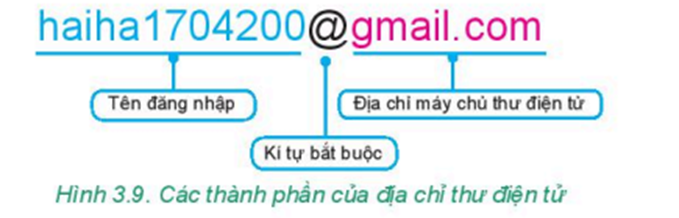

- Thư điện tử (email hay e-mail) là thư được gửi và nhận bằng phương tiện điện tử trên mạng máy tính. Thư điện tử là một trong những hình thức trao đổi thông tin được rất nhiều người sử dụng.
- Dịch vụ thư điện tử là dịch vụ cung cấp các chức năng soạn thảo, gửi, nhận, chuyển tiếp, lưu trữ và quản lí thư điện tử cho người sử dụng.
- Người sử dụng đăng kí với nhà cung cấp dịch vụ thư điện tử để mở tài khoản thư điện tử. Người sử dụng có thể dùng dịch vụ thư điện tử trả phí hoặc miễn phí. Một Số nhà cung cấp dịch vụ thư điện tử miễn phí: Google, Yahoo, Microsoft,...
- Khi có tài khoản thư điện tử, người sử dụng sẽ được cấp một hộp thư điện tử trên máy chủ thư điện tử cùng tên đăng nhập và mật khẩu. Hộp thư được gắn với một địa chỉ thư điện tử.
- Địa chỉ thư điện tử có dạng:
→ Thư điện tử là thư được gửi và nhận bằng phương tiện điện tử.
→ Khi đăng kí tài khoản thư điện tử, người sử dụng có một hộp thư điện tử cùng địa chỉ thư và mật khẩu.
→ Địa chỉ thư điện tử có dạng: <...>@<địa chỉ máy chủ thư điện tử>.
→ Dịch vụ thư điện tử cung cấp các chức năng để soạn, gửi, nhận, chuyển tiếp, lưu trữ và quản lí thư điện tử cho người sử dụng.
Từ khi ra đời, dịch vụ thư điện tử được nhiều cá nhân và các tổ chức sử dụng. So với các phương thức liên lạc khác, dịch vụ này có nhiều ưu điểm và cũng có một số nhược điểm.
Hiện nay có nhiều website cung cấp miễn phí dịch vụ thư điện tử cho người sử dụng. Các thao tác cần thực hiện để tạo tài khoản và sử dụng hộp thư trên các website là tương tự nhau.
Nhiệm vụ: Tạo một tài khoản thư điện tử mới trên website mail.google.com (hay gmail.com). Đăng nhập hộp thư, xem nội dung, soạn thư mới và gửi thư.